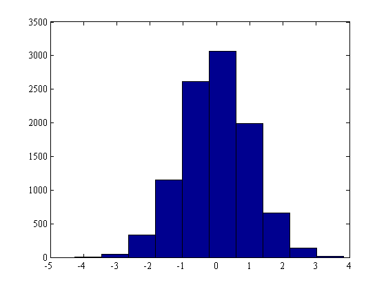
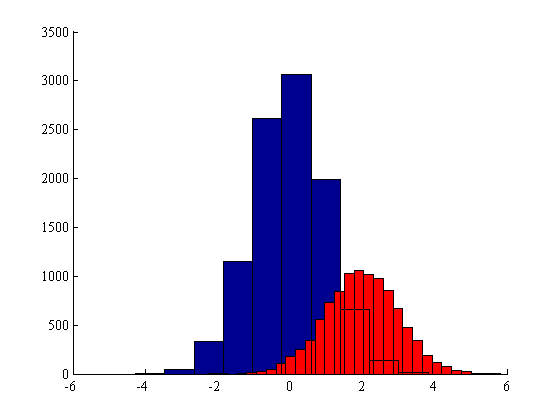
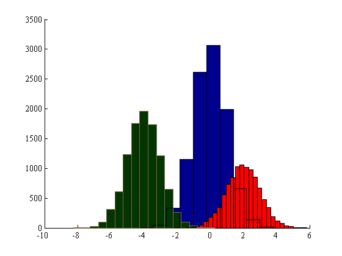
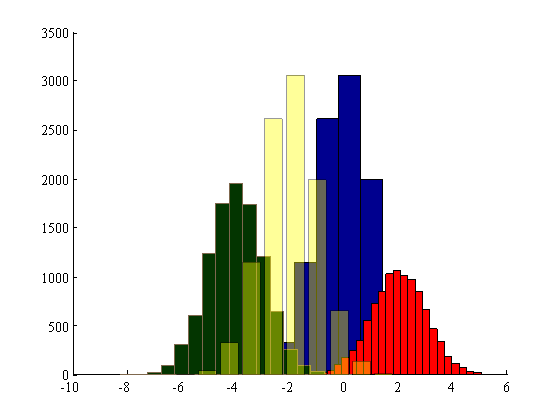
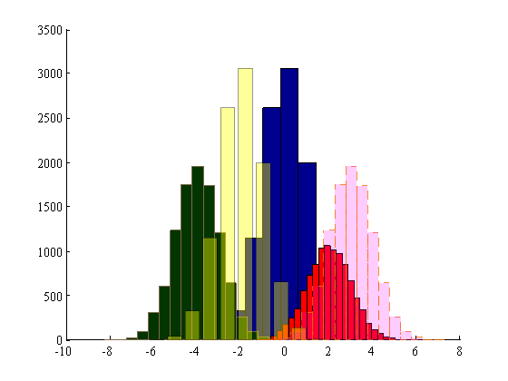

histf
This function plots formatted histograms. It's similar to hist, but with more options for FaceColor, BarWidth, LineStyle, FaceAlpha, etc.
Contents
Syntax
histf(Y) histf(Y,x) histf(Y,nbins) histf(...,'BarWidth',BarWidth) histf(...,'FaceColor',FaceColor) histf(...,'EdgeColor',EdgeColor) histf(...,'LineStyle',LineStyle) histf(...,'LineWidth',LineWidth) histf(...,'FaceAlpha',FaceAlpha) histf(...,'EdgeAlpha',EdgeAlpha) histf(...,'Alpha',Alpha) [n,xout,h] = histf(...)
Description
histf(Y) bins the elements in vector Y into 10 equally spaced containers and returns the number of elements in each container as a row vector. If Y is an m-by-p matrix, histf treats the columns of Y as vectors. No elements of Y can be complex or of type integer.
histf(Y,x) where x is a vector, returns the distribution of Y among length(x) bins with centers specified by x. For example, if x is a 5-element vector, histf distributes the elements of Y into five bins centered on the x-axis at the elements in x, none of which can be complex.
histf(Y,nbins) where nbins is a scalar, uses nbins number of bins.
histf(...,'BarWidth',BarWidth) specifies the width of bars as a fraction of total space available for each bar. Default BarWidth is 1.
histf(...,'FaceColor',FaceColor) specifies face color as a short name, long name, or RGB triple.
histf(...,'EdgeColor',EdgeColor) specifies edge coloras a short name, long name, or RGB triple.
histf(...,'LineStyle',LineStyle) specifies line style of bar edges. Can be '-' (default), ':', '--', '-.', or 'none'.
histf(...,'LineWidth',LineWidth) specifies line width of bar edge in points. Default LineWidth is 0.5 points.
histf(...,'FaceAlpha',FaceAlpha) specifies transparency value of bar faces. FaceAlpha must be a scalar between 0 and 1. Default value is 1.
histf(...,'EdgeAlpha',EdgeAlpha) specifies transparency value of bar edges. EdgeAlpha must be a scalar between 0 and 1. Default value is 1.
histf(...,'Alpha',Alpha) sets FaceAlpha and EdgeAlpha to Alpha.
[n,xout,h] = histf(...) returns vectors n and xout containing the frequency counts and the bin locations. h is the handle of the newly plotted histogram.
Example
We'll start with a no-frills histogram that exactly matches the example provided in Matlab's documentation for hist:
x = -4:.5:4; y = randn(10000,1); histf(y)
Now we add more histograms and format them. First, in a Tuftian move we'll increase our data-to-ink ratio by turning off that ugly box. Then we'll use hold on so we can plot some more data atop the histogram we created above. The first histogram we create will be red.
box off; hold on histf(y+2,30,'facecolor','r')
If you're feeling a bit limited by Matlab's short list of built-in colors, you can always use an RGB triplet to specify the colors you'd like to use. If you don't know the RGB triplets of all the colors in the world, you can use the rgb function.
histf(y-4,x-4,'facecolor',rgb('dark green'),'edgecolor',rgb('dark taupe'));
histf not only extends histogram formatting to the formatting options you get with bar, but it goes a step further by providing transparency (alpha) options. 'FaceAlpha' and 'EdgeAlpha' may be declared separately, or you may set them both with |'alpha'|Here we plot a histogram of semitransparent yellow bars that fill 80 percent of the available width:
histf(y-2,'facecolor','yellow','alpha',.4,'barwidth',.8)
Edge alpha is also available:
histf(y+3,x+3,'facecolor','m','facealpha',.2,... 'edgecolor',[.97 .45 .02],'edgealpha',.8,... 'linestyle','--')
Now we can create a legend. Unfortunately, the legend function does not mimic alpha values of patch objects, so we'll have to use the legalpha function. We'll also plot a point on the histogram simply to illustrate that legalpha has no problem with mixed patch/marker inputs.
plot(4,2500,'k*') legalpha('no frills','red','green and taupe',' yellow, \alpha, barwidth',... 'facealpha and edgealpha','an asterisk','location','northwest') legend boxoff axis tight

Author Info
This function written by Chad A. Greene of the University of Texas at Austin's Institute for Geophysics (UTIG) in August of 2014.